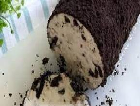

|
Bahan-bahan
- 1/4 (ons) wipped cream
- 2 bungkus oreo
- Susu kental manis (secukupnya)
- Air dingin atau air es (secukupnya)
Cara Pembuatan
- Campurkan wipped cream dengan air es lalu mixer sampai mengembang,lalu masukkan susu kental manis secukupya dan mixer lagi agar tercampur rata.
- pisahkan oreo ,lalu bagian krimnya masukkan ke dalam wipped cream.
- Aduk kembali agar krimnya tercampur rata.
- Remas sampai sedikit halus bagian oreo yang tadi.
- Masukkan adonan kedalam cetakan(cetakan bebas sesuai selera.
- Masukkan kedalam kulkas hingga membeku.
- Setelah membeku keluarkan es krim dari cetakan.
- Lalu lumuri es krim dengan serpihan oreo hingga menyeluruh.
- Es krim oreo Roll siap untuk di santap.
|